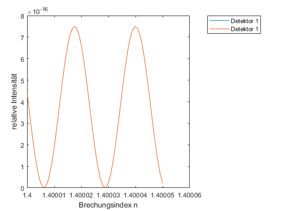

Contents
close all;
clear all;
clc;
Deklarationen
syms t; ...
syms A_1 A_2...
z_1 z_2...
w...
k...
wellenlaenge...
c...
TV...
s...
n; ...
Definitionen
c = 299792458;
wellenlaenge = 450*10^(-9);
k = 2*pi/wellenlaenge;
R = 0.5;
TV = 0.5;
w = c*k;
z_1 = 1;
z_2 = 1.34;
A_1 = 1;
A_2 = 1;
T = wellenlaenge/c;
s = 0.02;
phi(n) = s*(n-1)*2*pi/wellenlaenge;
Wellenfunktionen
E_1(t,n) = R^2*exp(1i*(phi(n)+3*pi+k*z_1+w*t))+ R^2*exp(-1i*(phi(n)+3*pi+k*z_1+w*t))+...
TV^2*exp(1i*(1*pi+k*z_2+w*t))+TV^2*exp(-1i*(1*pi+k*z_2+w*t));
E_2(t,n) = R*TV*exp(1i*(2*pi+phi(n)+k*z_1+w*t))+R*TV*exp(-1i*(2*pi+phi(n)+k*z_1+w*t))+...
R*TV*exp(1i*(2*pi+k*z_2+w*t))+R*TV*exp(-1i*(2*pi+k*z_2+w*t));
Intensitäten
I_1(t,n) = E_1(t,n)^2; ...
I_2(t,n) = E_2(t,n)^2; ...
I_mw_1(n) = int(I_1(t,n),0,T); ...
I_mw_2(n) = int(I_2(t,n),0,T); ...
Plotten der Intensität für unterschiedliche n
x = [1.4:0.000001:1.40005];
plot(x,I_mw_1(x),x,I_mw_2(x));
legend('Detektor 1','Detektor 1','Location','NorthEastOutside');
xlabel('Brechungsindex n');
ylabel('relative Intensität');
Warning: Imaginary parts of complex X and/or Y arguments ignored

Plotten der EM-Wellen
x = [0:T*0.005:T*2];
plot(x,E_2(x,1),x,E_1(x,1));